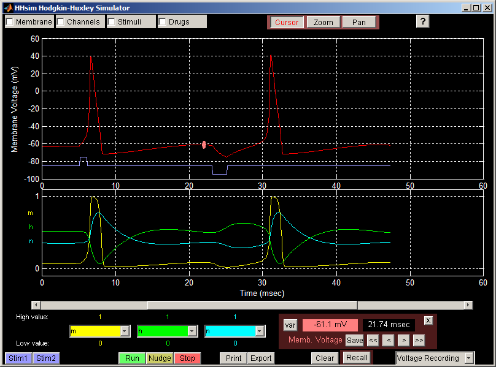
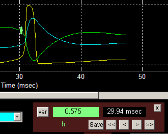
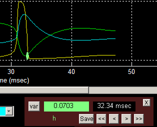

На рисунке выше курсор измеряет потенциал покоя (красная линия на верхнем графике) непосредственно перед подачей тормозного стимула. Панель курсора в правом нижнем углу показывает, что мембранный потенциал равен −61,1 мВ через 21,74 мс от начала моделирования.
Установленный курсор можно перемещать влево или вправо кнопками управления на панели курсора. Кнопки < и > сдвигают курсор на одну точку по времени влево или вправо соответственно. Кнопки << и >> перемещают курсор влево или вправо к ближайшему локальному максимуму или минимуму. Например, пусть нужно найти момент наибольшего закрытия инактивационных ворот натриевого канала (h) после спайка. Сначала щёлкните по зелёной линии, чтобы активировать курсор:

Видно, что значение переменной инактивационных ворот h равно 0,575 через 29,94 мс от начала моделирования. Теперь нажмите кнопку >>, чтобы сдвинуть курсор вправо к ближайшему экстремальному значению:

Панель курсора показывает, что локальный минимум h равен 0,0703 и достигается через 32,34 мс.
Кнопка пер. (переменная; в оригинале — var) переводит курсор по вертикали с одной линии графика на другую, чтобы измерить другую переменную в тот же момент времени. Например, пусть нужно узнать значение переменной активационных ворот калиевого канала (n) на пике спайка. Для этого установите курсор на красную линию (мембранный потенциал) и кнопкой << или >> найдите пик. Затем нажимайте кнопку пер., пока курсор не окажется на голубой линии (n), и прочитайте значение на панели курсора.
Кнопка Запомнить (в оригинале — Save) на панели курсора сохраняет значения переменных Ходжкина–Хаксли в текущей позиции курсора. Позже можно вернуть модель к этим значениям, нажав кнопку Вернуть (Recall). Это удобно, чтобы после каждой из серии манипуляций возвращать систему в известное состояние покоя и корректно сравнивать результаты.
Назад, к руководству по работе с HHsim